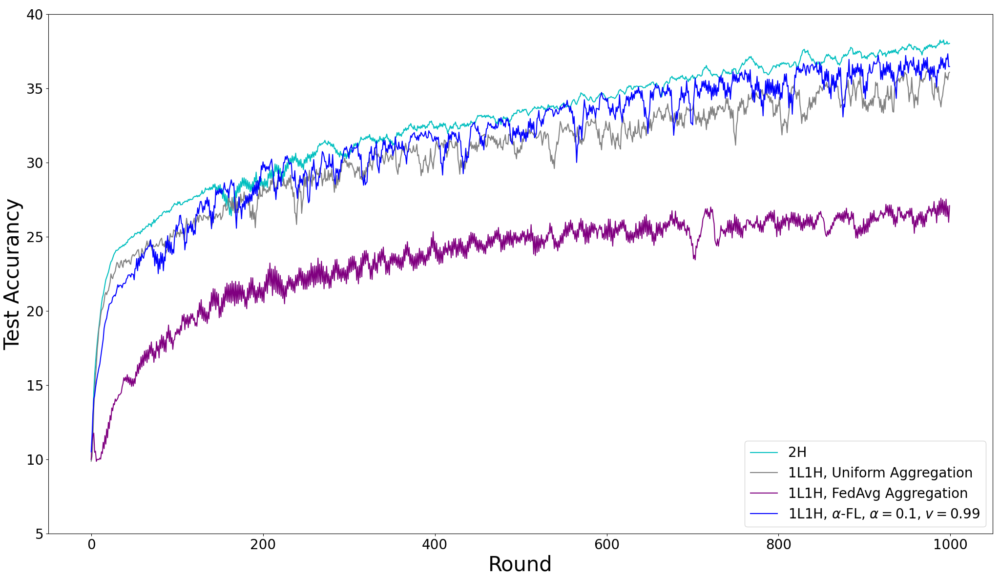

Sy-Tuyen Ho |
Ngai-Man Cheung
Singapore University of Technology and Design (SUTD)
RCV@ECCV 2022
Federated Learning (FL) allows training a global model without accessing clients' data to protect privacy. Since the introduction of Federated Averaging (FedAvg), a common belief till now is that FL aggregation weights clients by their number of data points. Opposite to this, we find that uniform aggregation strongly outperforms the weighted aggregation under the setting of heterogeneity in data sizes among clients posed in the scenario of non-IID data. Based on our findings, we further introduce a simple yet effective aggregation, namely α-FL, to improve the performance of uniform aggregation with no additionally provided information compared to FedAvg. That means α-FL can be easily incorporated into other proposed FL methods to solve particular FL problems. Our extensive experimentation shows the superiority of the α-FL aggregation over the usual FedAvg aggregation by 9.45% on CIFAR-10 under a highly skewed non-IID data setting.

@article{Ho_2022_RCV_ECCV,
author = {Ho, Sy-Tuyen and Cheung, Ngai-Man},
title = {Model Inversion Robustness: Can Transfer Learning Help?},
booktitle = {Responsible Computer Vision, ECCV 2022 Workshop},
month = {October},
year = {2022},
}
}